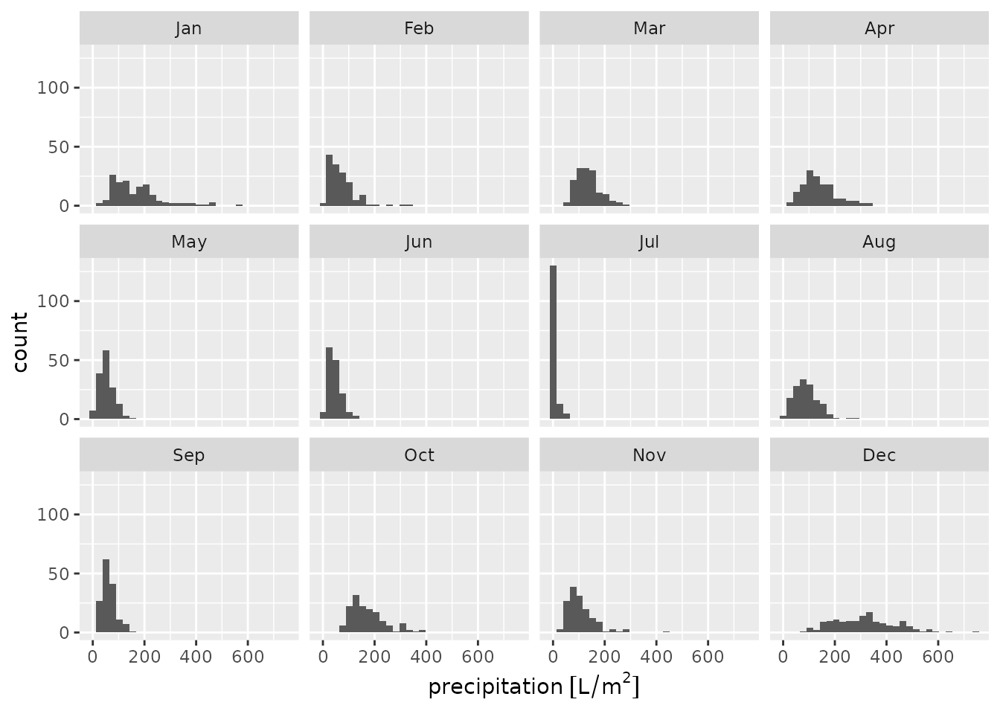

library(meteospain)
library(ggplot2)
library(ggforce)
library(sf)
#> Linking to GEOS 3.8.1, GDAL 3.2.1, PROJ 7.2.1MeteoGalicia service
MeteoGalicia service offers the data of the galician automatic meteorological stations network. This network is supported and assessed by the Xunta de Galicia and the data should be trustworthy.
MeteoGalicia options
Temporal resolution
MeteoGalicia API offers data at different temporal resolutions:
- “instant”, returning the latest measures for all or selected stations.
- “current_day”, returning the latest 24 hours of measures for all or selected stations.
- “daily”, returning the daily aggregated measures for all or selected stations.
- “monthly”, returning the monthly aggregated measures for all or selected stations.
In both, “daily” and “monthly”, a start_date (and optionally an end_date) arguments must be provided, indicating the period from which retrieve the data.
Stations
MeteoGalicia API allows specifying stations code to narrow the data retrieved. So, a character vector of station codes can be supplied in the stations argument.
Examples
# last measure for all stations
api_options <- meteogalicia_options()
api_options
#> $resolution
#> [1] "instant"
#>
#> $start_date
#> [1] "2021-11-04"
#>
#> $end_date
#> [1] "2021-11-04"
#>
#> $stations
#> NULL
# current day, only some stations
api_options <- meteogalicia_options(
resolution = 'current_day',
stations = c('10157', '14000', '10045')
)
api_options
#> $resolution
#> [1] "current_day"
#>
#> $start_date
#> [1] "2021-11-04"
#>
#> $end_date
#> [1] "2021-11-04"
#>
#> $stations
#> [1] "10157" "14000" "10045"
# daily, all stations
api_options <- meteogalicia_options(
resolution = 'daily',
start_date = as.Date('2020-04-25'), end_date = as.Date('2020-05-25')
)
api_options
#> $resolution
#> [1] "daily"
#>
#> $start_date
#> [1] "2020-04-25"
#>
#> $end_date
#> [1] "2020-05-25"
#>
#> $stations
#> NULL
# monthly, some stations
api_options <- meteogalicia_options(
resolution = 'monthly',
start_date = as.Date('2020-04-01'), end_date = as.Date('2020-08-01'),
stations = c('10157', '14000', '10045')
)
api_options
#> $resolution
#> [1] "monthly"
#>
#> $start_date
#> [1] "2020-04-01"
#>
#> $end_date
#> [1] "2020-08-01"
#>
#> $stations
#> [1] "10157" "14000" "10045"MeteoGalicia stations info
Accessing station metadata for MeteoGalicia is simple:
get_stations_info_from('meteogalicia')
#> Simple feature collection with 154 features and 5 fields
#> Geometry type: POINT
#> Dimension: XY
#> Bounding box: xmin: -9.178318 ymin: 41.8982 xmax: -6.765224 ymax: 43.734
#> Geodetic CRS: WGS 84
#> # A tibble: 154 × 6
#> service station_id station_name station_province altitude
#> * <chr> <chr> <chr> <chr> [m]
#> 1 meteogalicia 10157 Coruña-Torre de Hércules A Coruña 21
#> 2 meteogalicia 14000 Coruña-Dique A Coruña 5
#> 3 meteogalicia 10045 Mabegondo A Coruña 94
#> 4 meteogalicia 14003 Punta Langosteira A Coruña 5
#> 5 meteogalicia 10144 Arzúa A Coruña 362
#> 6 meteogalicia 19005 Guísamo A Coruña 175
#> 7 meteogalicia 19012 Cespón A Coruña 59
#> 8 meteogalicia 10095 Sergude A Coruña 231
#> 9 meteogalicia 10800 Camariñas A Coruña 5
#> 10 meteogalicia 19001 Rus A Coruña 134
#> # … with 144 more rows, and 1 more variable: geometry <POINT [°]>MeteoGalicia data
api_options <- meteogalicia_options(
resolution = 'daily',
start_date = as.Date('2020-04-25')
)
galicia_20200425 <- get_meteo_from('meteogalicia', options = api_options)
#> A información divulgada a través deste servidor ofrécese gratuitamente aos cidadáns para que poida ser
#> utilizada libremente por eles, co único compromiso de mencionar expresamente a MeteoGalicia e á
#> Consellería de Medio Ambiente, Territorio e Vivenda da Xunta de Galicia como fonte da mesma cada vez
#> que as utilice para os usos distintos do particular e privado.
#> https://www.meteogalicia.gal/web/informacion/notaIndex.action
galicia_20200425
#> Simple feature collection with 156 features and 16 fields (with 5 geometries empty)
#> Geometry type: POINT
#> Dimension: XY
#> Bounding box: xmin: -9.178318 ymin: 41.8982 xmax: -6.765224 ymax: 43.734
#> Geodetic CRS: WGS 84
#> # A tibble: 156 × 17
#> timestamp service station_id station_name station_province altitude
#> <dttm> <chr> <chr> <chr> <chr> [m]
#> 1 2020-04-25 00:00:00 meteog… 10045 Mabegondo A Coruña 94
#> 2 2020-04-25 00:00:00 meteog… 10046 Marco da Cu… A Coruña 651
#> 3 2020-04-25 00:00:00 meteog… 10047 Pedro Murias Lugo 51
#> 4 2020-04-25 00:00:00 meteog… 10048 O Invernade… Ourense 1026
#> 5 2020-04-25 00:00:00 meteog… 10049 Corrubedo A Coruña 30
#> 6 2020-04-25 00:00:00 meteog… 10050 CIS Ferrol A Coruña 37
#> 7 2020-04-25 00:00:00 meteog… 10052 Muralla A Coruña 661
#> 8 2020-04-25 00:00:00 meteog… 10053 Campus Lugo Lugo 400
#> 9 2020-04-25 00:00:00 meteog… 10055 Guitiriz-Mi… Lugo 684
#> 10 2020-04-25 00:00:00 meteog… 10056 Marroxo Lugo 645
#> # … with 146 more rows, and 11 more variables: mean_temperature [°C],
#> # min_temperature [°C], max_temperature [°C], mean_relative_humidity [%],
#> # min_relative_humidity [%], max_relative_humidity [%],
#> # precipitation [L/m^2], mean_wind_direction [°], mean_wind_speed [m/s],
#> # insolation [h], geometry <POINT [°]>Visually:
galicia_20200425 %>%
units::drop_units() %>%
ggplot() +
geom_sf(aes(colour = max_temperature)) +
scale_colour_viridis_c()
galicia_20200425 %>%
ggplot() +
geom_histogram(aes(x = precipitation))
#> `stat_bin()` using `bins = 30`. Pick better value with `binwidth`.